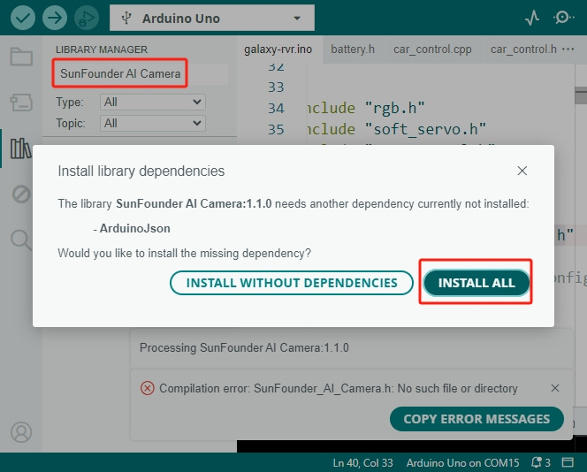
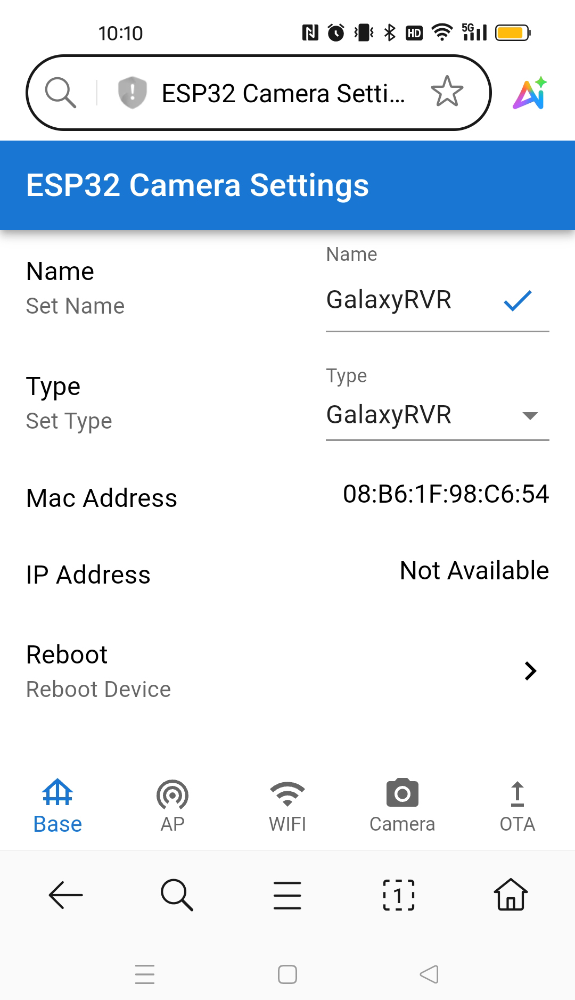
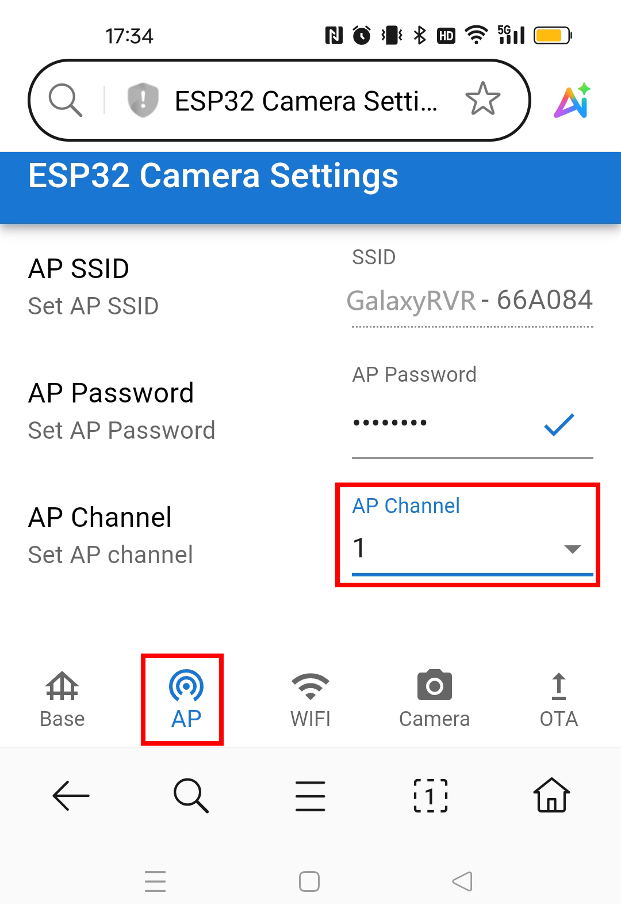
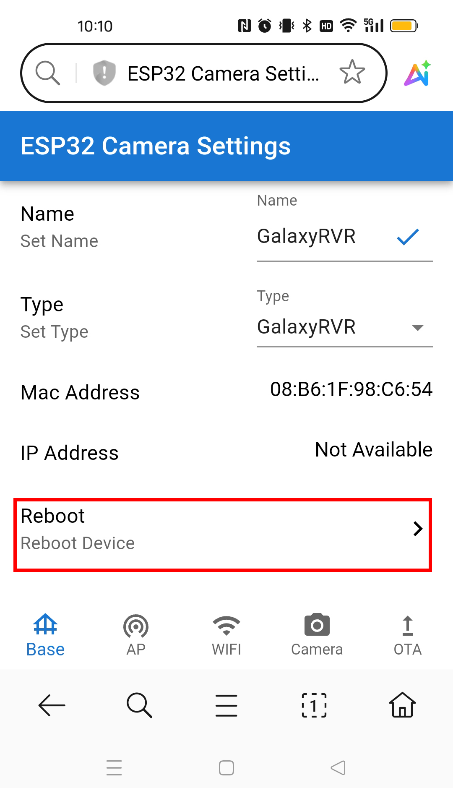
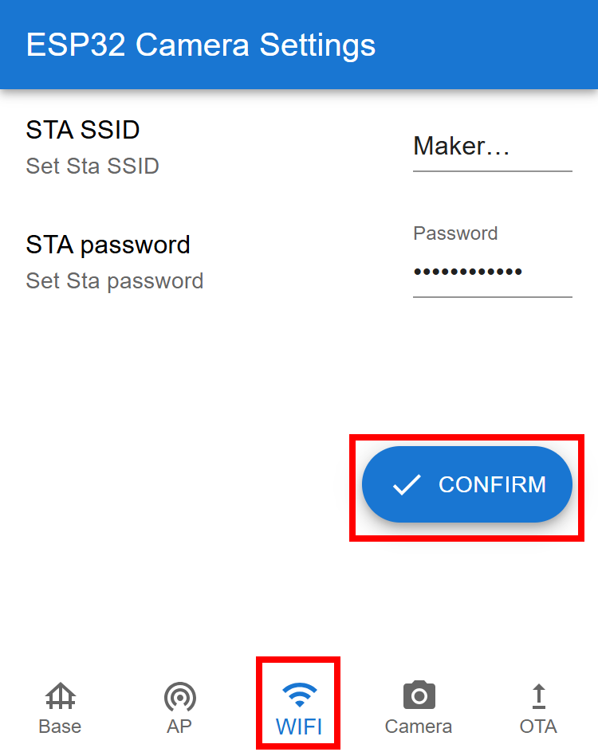

Note
Hello, welcome to the SunFounder Raspberry Pi & Arduino & ESP32 Enthusiasts Community on Facebook! Dive deeper into Raspberry Pi, Arduino, and ESP32 with fellow enthusiasts.
Why Join?
Expert Support: Solve post-sale issues and technical challenges with help from our community and team.
Learn & Share: Exchange tips and tutorials to enhance your skills.
Exclusive Previews: Get early access to new product announcements and sneak peeks.
Special Discounts: Enjoy exclusive discounts on our newest products.
Festive Promotions and Giveaways: Take part in giveaways and holiday promotions.
👉 Ready to explore and create with us? Click [here] and join today!
FAQ
1. Unable to Connect to GalaxyRVR?
If you cannot connect to the GalaxyRVR, please check the following:
Check the battery indicators on the rover. If both LEDs are off, the battery is low. Charge the rover using a Type-C USB cable.
Reset the GalaxyRVR by switching the mode to Run and pressing the Reset button.
Verify that your mobile device is connected to the GalaxyRVR hotspot.
If you have configured a home Wi-Fi network, ensure your mobile device is connected to the same home Wi-Fi network.
2. Compilation error: SoftPWM.h or SunFounder_AI_Camera.h: No such file or directory？
If you get a “Compilation error: SoftPWM.h: No such file or directory” prompt, it means you don’t have the SoftPWM library installed.
Please install the two required libraries SoftPWM and SunFounder AI Camera as shown.
For the SunFounder AI Camera library, you need to select “INSTALL ALL” to simultaneously install the required ArduinoJson dependency.

3. avrdude: stk500_getsync() attempt 10 of 10: not in sync: resp=0x6e?
If the following message keeps appearing after clicking the Upload button when the board and port have been selected correctly.
avrdude: stk500_recv(): programmer is not responding
avrdude: stk500_getsync() attempt 1 of 10: not in sync: resp=0x00
avrdude: stk500_recv(): programmer is not responding
avrdude: stk500_getsync() attempt 2 of 10: not in sync: resp=0x00
avrdude: stk500_recv(): programmer is not responding
avrdude: stk500_getsync() attempt 3 of 10: not in sync: resp=0x00
At this point, you need to make sure that the ESP32 CAM is unplugged.
The ESP32-CAM and the Arduino board share the same RX (receive) and TX (transmit) pins. So, before you’re uploading code, you’ll need to first disconnect the ESP32-CAM to avoid any conflicts or potential issues.

After the code is successfully uploaded, if you need to use the ESP32 CAM, then you need to move the switch to the left to start the ESP32 CAM.
{kind=link}
4. How to Change Wi-Fi Channel?
The 2.4GHz Wi-Fi band has channels ranging from 1 to 13. ESP32 supports channels 1 to 11. Other devices operating on the same channel may cause interference, leading to connection issues. To mitigate this, you can try changing the channel. By default, the channel is set to 1. When selecting a new channel, it’s recommended to skip 1-2 channels at a time. For example, if the current channel is 1, try channel 3 first, and if the signal is still poor, proceed to channel 5.
Power on the GalaxyRVR. To activate the ESP32 CAM, move the mode switch to the Run position, and press the reset button to reboot the R3 board.
Connect your mobile device to the GalaxyRVR’s WiFi network.
The network name (SSID) is
GalaxyRVRand the password is12345678.If you see a warning stating “No Internet access,” please choose the option to “Stay connected.”

Open a web browser on your mobile device and go to the address
http://192.168.4.1. This will take you to the ESP32-CAM firmware update portal.
Under the AP page, select a different channel.
The default channel is 1. When selecting a new channel, skip 1-2 channels at a time (e.g., from channel 1 to 3, and if needed, to 5).

Return to the Base page and click the Reboot button to restart the GalaxyRVR. The GalaxyRVR is now ready for normal operation.

{kind=link}
{kind=link}
{kind=link}
5. How to Update Firmware for ESP32 CAM
For detailed step-by-step instructions, please refer to: Update Firmwares
6. How to Restore the R3 Firmware
The GalaxyRVR’s R3 board comes with firmware that supports both the RoboPilot App and Mammoth Coding.
If you have overwritten this firmware and need to restore communication, follow 3. Updating the R3 Board Firmware.
7. How to Set Up Wi-Fi Connection
By default, GalaxyRVR operates in AP mode, where it creates its own Wi-Fi hotspot that other devices can connect to.
If you want GalaxyRVR to connect to your home Wi-Fi network, follow the steps below:
Power on the GalaxyRVR. To activate the ESP32 CAM, move the mode switch to the Run position, and press the reset button to reboot the R3 board.
Connect your mobile device to the GalaxyRVR’s WiFi network.
The network name (SSID) is
GalaxyRVRand the password is12345678.If you see a warning stating “No Internet access,” please choose the option to “Stay connected.”
Open a web browser on your mobile device and go to the address
http://192.168.4.1. This will take you to the ESP32-CAM firmware update portal.Under the WiFi page, enter your home WiFi network name (SSID) and password.

Tap the CONFIRM button.
GalaxyRVR will attempt to connect to your home Wi-Fi.
If the connection is successful, the spinning icon will stop and a checkmark will appear.
After rebooting, connect your mobile device to the same home Wi-Fi network.
You can now connect to GalaxyRVR through the RoboPilot App or Mammoth Coding.
{kind=link}